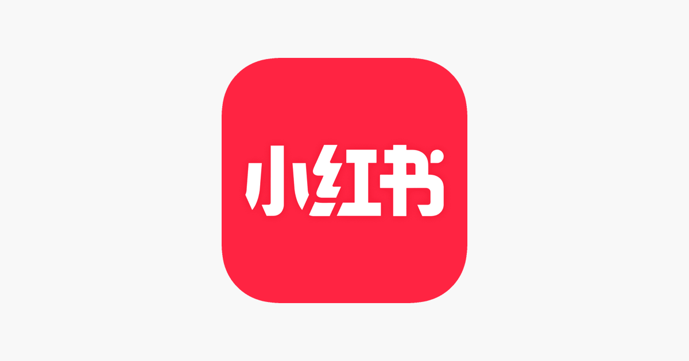
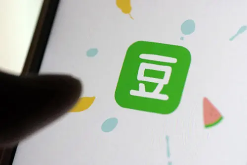

第一关：基于 OSINT 的信息搜集与推理（新 - 分步）
亲爱的，欢迎开启这场专属于我们的解密之旅。在这个关卡，你要化身机智侦探，探寻我在 2022 年那个意义非凡的纪念日。线索就藏在网络世界里，而这个纪念日呀，和我与同事们的奇妙经历紧密相连，快出发去揭开它的面纱吧！
第一步：平台抉择
网络世界纷繁复杂，首先你得选个“秘密基地”开启搜索。可供挑选的有充满即时分享的微博、擅长图文记录生活的小红书，还有聚焦本地活动的生活论坛。思考下，我这类上班族最爱在哪分享细腻生活瞬间呢？做出你的选择。



第四步：探寻微妙线索
经过关键词的优化，搜索结果里藏着不少“宝藏”。仔细翻阅，寻找一条能暗示我和某位同事关系发生微妙变化的线索。这条线索可能藏在看似平常的文字里，或者特别的图片细节中。

第五步：新线索提示
恭喜你找到了关键的微妙线索，现在，新的线索来咯——雪花飘落的浪漫时刻。结合这个线索，快推理出那个重要的纪念日日期吧。

小礼品获取
甜蜜的奖励来啦！游戏界面会弹出一个梦幻音乐盒，播放那首充满爱意的《简单爱》，音乐盒周围还有粉色花瓣飘落，就像我们的美好回忆在眼前浮现。